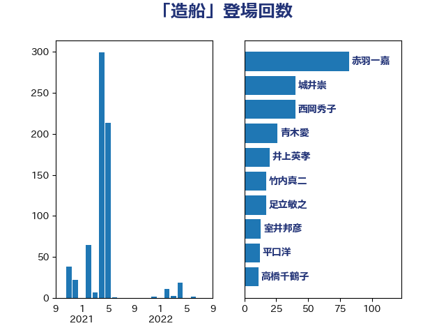

単語「造船」

| 赤羽一嘉 | 公明党 | 82 回 |
| 城井崇 | 立憲民主党 | 40 回 |
| 西岡秀子 | 国民民主党 | 40 回 |
| 青木愛 | 立憲民主党 | 26 回 |
| 井上英孝 | 日本維新の会 | 20 回 |
| 竹内真二 | 公明党 | 17 回 |
| 足立敏之 | 自由民主党 | 17 回 |
| 室井邦彦 | 日本維新の会 | 13 回 |
| 平口洋 | 自由民主党 | 12 回 |
| 高橋千鶴子 | 日本共産党 | 11 回 |
| 浜口誠 | 国民民主党 | 8 回 |
| 鳩山二郎 | 自由民主党 | 8 回 |
| 有村治子 | 自由民主党 | 7 回 |
| 古川元久 | 国民民主党 | 6 回 |
| 大西英男 | 自由民主党 | 6 回 |
| 吉川ゆうみ | 自由民主党 | 5 回 |
| 渡辺猛之 | 自由民主党 | 4 回 |
| 黄川田仁志 | 自由民主党 | 4 回 |
| 梶山弘志 | 自由民主党 | 3 回 |
| あかま二郎 | 自由民主党 | 2 回 |
| 三浦信祐 | 公明党 | 2 回 |
| 古川禎久 | 自由民主党 | 2 回 |
| 古賀友一郎 | 自由民主党 | 2 回 |
| 小林鷹之 | 自由民主党 | 2 回 |
| 山口壯 | 自由民主党 | 2 回 |
| 斉藤鉄夫 | 公明党 | 2 回 |
| 杉尾秀哉 | 立憲民主党 | 2 回 |
| 穀田恵二 | 日本共産党 | 2 回 |
| 中西祐介 | 自由民主党 | 1 回 |
| 井上哲士 | 日本共産党 | 1 回 |
| 古賀之士 | 立憲民主党 | 1 回 |
| 小沼巧 | 立憲民主党 | 1 回 |
| 岡本三成 | 公明党 | 1 回 |
| 岸田文雄 | 自由民主党 | 1 回 |
| 新垣邦男 | 立憲民主党 | 1 回 |
| 本田顕子 | 自由民主党 | 1 回 |
| 河野義博 | 公明党 | 1 回 |
| 玉木雄一郎 | 国民民主党 | 1 回 |
| 茂木敏充 | 自由民主党 | 1 回 |
| 野上浩太郎 | 自由民主党 | 1 回 |
| 鶴保庸介 | 自由民主党 | 1 回 |